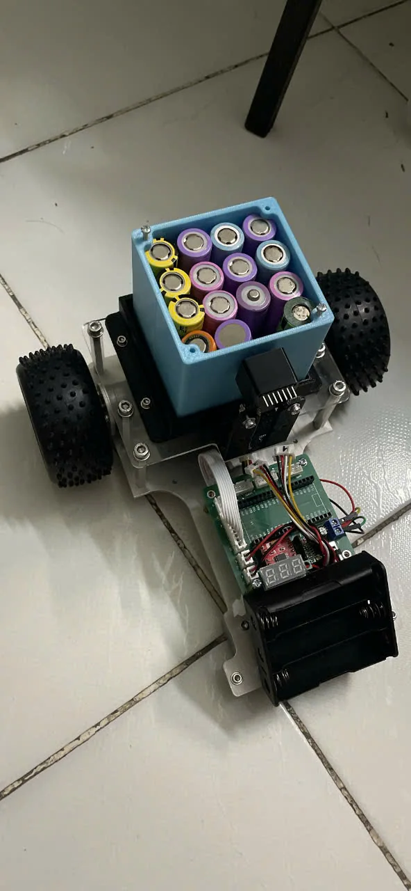
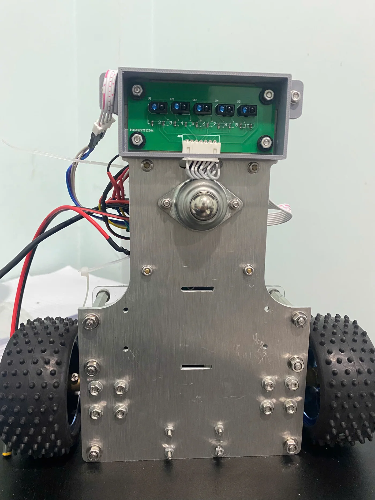

Mô phỏng & điều khiển Robotics
Xe dò line phân loại hàng hóa theo màu sắc
Mình phụ trách mô phỏng, mô hình hóa hệ thống, hiệu chuẩn cảm biến và tính toán hàm truyền, thiết kế PID cho động cơ; đồng thời hỗ trợ xây dựng giải thuật và lập trình robot.

Vai trò chính của mình
Mình xây dựng mô hình và mô phỏng hoạt động của xe để kiểm tra hướng điều khiển trước khi chạy thử trên robot. Từ dữ liệu động cơ, mình tính toán hàm truyền và thiết kế, hiệu chỉnh bộ điều khiển PID nhằm giúp xe bám line ổn định hơn.
Mình cũng hiệu chuẩn cảm biến dò line và cảm biến màu, hỗ trợ xây dựng giải thuật nhận biết đường đi/phân loại hàng hóa, rồi phối hợp lập trình và kiểm thử toàn hệ thống.
Từ mô hình đến chạy thử
Mình bắt đầu bằng mô hình hóa động cơ và hệ thống cảm biến, sau đó dùng mô phỏng để đánh giá đáp ứng điều khiển. Khi tích hợp lên xe, mình hiệu chuẩn cảm biến, tinh chỉnh PID và phối hợp kiểm thử khả năng bám line, nhận biết màu và phân loại hàng.
Quy trình thử nghiệm được ghi lại trong các video bên dưới, gồm hiệu chuẩn cảm biến, chạy thử theo line và lần vận hành thành công.
Hình ảnh dự án
Hình ảnh xe thử nghiệm và cụm cảm biến dò line


Video hiệu chuẩn & chạy thử
Các video đã được loại bỏ hoàn toàn âm thanh